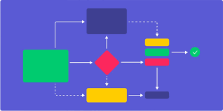

BPanoramic56
Ideas brought to code
Bruno, you forgot the
Introduction
again!
Projects:

Mental Charts
Some minor plans that I might pursue, with classes and degree requirements
Read More
Server
Website with links to my server, currently running on a Ubuntu instance in an old computer
Read More